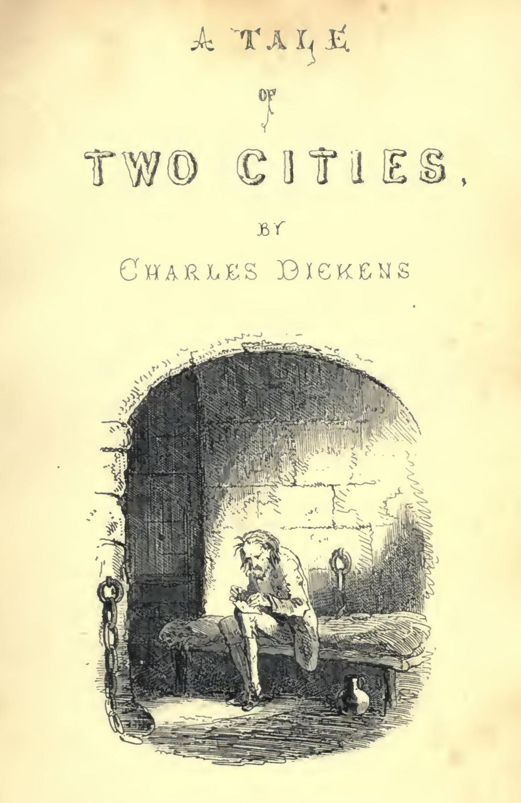

A Tale of Two Cities
A Tale of Two Cities by Charles Dickens is a historical novel set during the turbulent times of the French Revolution. The story moves between London and Paris, exploring themes of sacrifice, justice, and redemption. It follows the lives of several characters, most notably Charles Darnay, a French aristocrat who rejects his family`s cruel legacy; Lucie Manette, a symbol of love and compassion; and Sydney Carton.